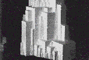
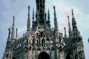
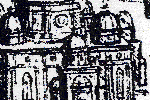

Examples of fractal themes in European architecture range from modern work back to drawings of da Vinci.
Fractality may be utilitarian, or reflect social, religious, or political hierarchies.
Maybe African fractals are more directly informed by nature, but this point could be debated.
We sample a few of the many instances.
|  | Arkhitektonics Malevich's scale-ambiguous buildings |
|  | Cathedrals Complicated ornamentation is a natural place to look for fractal themes |
|  | The Dome of St. Peter's Domes of many scales, organized hierarchically |
| The Eiffel tower Fractal construction material |